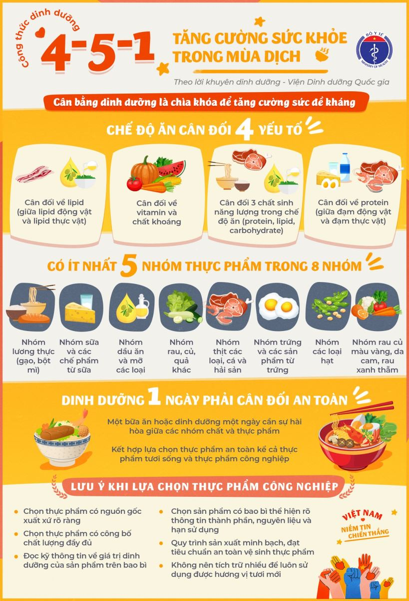
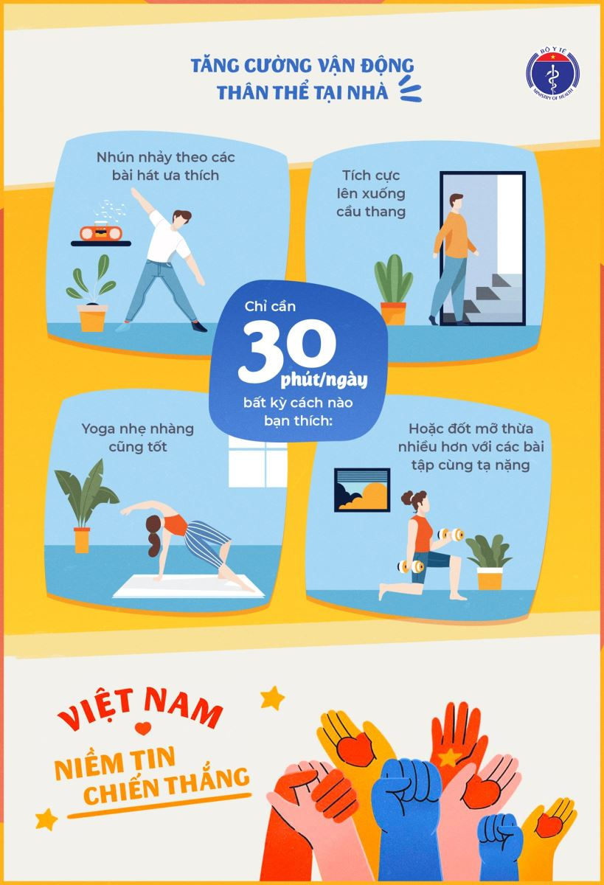

Dịch bệnh COVID-19 đang diến biến phức tạp trên thế giới và Việt Nam, việc bảo vệ sức khỏe bằng cách tăng cường sức đề kháng là một trong những giải pháp quan trọng để phòng ngừa nguy cơ nhiễm bệnh, bên cạnh các biện pháp như đeo khẩu trang, rửa tay thường xuyên với xà phòng hoặc nước sát khuẩn...thì cân bằng dinh dưỡng là chìa khóa để tăng cường sức đề kháng. Việc chủ động tăng cường sức đề kháng là rất cần thiết để phòng chống dịch hiệu quả.
Bộ Y tế khuyến cáo người dân chủ động tăng cường sức đề kháng qua dinh dưỡng và vận động để phòng chống dịch hiệu quả:
Cân bằng dinh dưỡng để tăng cường sức đề kháng bằng cách, đảm bảo đầy đủ chất dinh dưỡng trong mỗi bữa ăn, từ những thực phẩm có nguồn gốc rõ ràng, và tránh tích trữ quá nhiều để luôn được sử dụng thực phẩm tươi mới.
Tăng cường vận động thân thể tại nhà bằng các bài tập vận động phù hợp với sức khỏe và thể trạng của từng người.
Ngoài việc tăng cường sức đề kháng thì chúng ta nên thực hiện đầy đủ khuyến cáo của bộ y tế, thực hiện nghiêm thông điệp 5k và các chỉ thị của thủ tướng chính phủ, góp phần chung tay cùng cả nước đẩy lùi và chiến thắng dịch bệnh.